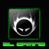

Уже по традиции в воскресенье клан ТоР был занят участием в сразу двух ивентах- командном (CW- vs клана Sleu) и индивидуальном (6-ой тур лиги TTL)…
ToP training league: part VI
Малое посещение харьковских турниров по war3 начинает уже откровенно раздражать. Вот и на шестой тур лиги TTL пришло лишь 5 человек, среди которых, правда, был один из сильнейших харьковских игроков- недавно поменявший клан DNI.Imba-elf- бывший №1 Харьковского рейтинга. По традиции в условиях малого количества участников- традиционный «дабл» был изменен на FFA- каждый с каждым до двух побед.
Не буду томить ожиданием- сразу скажу результаты:
1-е место: 
ToP)Exe
2-е место: DNI.Imba-elf
3-е место: 
ToP)Diablo
4-е место: Tema
Несмотря на то, что было сыграно немало интересных игр, действительно стоит отметить лишь несколько моментов:
ToP)Diablo—lose—DNI.Imba-elf 1:2 (SV, EI, TM)
Первая игра проходила в мироре уд-уд. Во второй игре соперники взяли уже свои расы, и Диабло просто застроил оппонента (EI). Третья игра проходила на ТМ и не смотря на то, что у Диабло были удачные моменты (в начале он окружил DH соперника рабами) игра закончилась победой эльфа.
ToP)Exe—def.—Tema 2:0 (TR, EI)
Игры надо было видеть! Если в первой игре Тема проиграл с экспом проработавшим около 7 минут (у эльфа экспа не было), то во второй игре АМ 6-го и тот же эксп очень долго отравляли жизнь эльфу, но свою победу Ехе все же вырвал.
ToP)Exe—lose—DNI.Imba-elf 1:2 (TM, TS, EI)
Первые две игры (Tm, TS) был очень равными и напряженными и прошли со счетом 1:1. Поскольку Ехе знал, что ему для победы нужно выиграть лишь дну карту, то в третьей игре уже сильно не напрягался и Имба-эльф победил уверенно.
Помимо этого стоит отметить еще несколько моментов- Рекса, который проиграл все игры (долгий инактив дает о себе знать) и Имба-эльфа, который выиграл все игры кроме Рекса со счетом 2-1, но занял лишь второе место т.к. уступил Ехе по разнице выигранных/проигранных карт. Следующий тур лиги состоится ближе к середине мая и будем надеться соберет больше игроков чем в этот раз.
P.S. Клан ТоР благодарит Имба-эльфа за предоставленные фотографии, которые вы можете найти на нашем сайте в разделе «файлы»
 --vs--
--vs--
В преддверии начала игр лиги RWL клан ТоР 29-го апреля проводил свой последний разминочный КВ против амбициозного (как показали игры- даже слишком) клана SLeu. Общение игроков не заладилось с самого начала, в чате мелькали словесные уколы и даже открытые оскорбления, но оскорбления в результат не запишешь, запишешь только игры…
ToP—[3:2]—SLeu
ToP)Exe—[2:1]— Sleu)Random
Sleu)Random
ToP)Tema—[1:2]— SLeu)Puma
SLeu)Puma
ToP)Adoveov—[0:2]—Sleu)Petrik
ToP)Diablo—[2:0]—SLeu)GnomlovesManya
ToP (Exe+Diablo)—[2:0]—SLeu (GnomlovesManya+Puma)
Вкратце пройдемся по результатам: в первой паре Ехе против андеда Random-а, Ехе легко порешал соперника на первой и третьей картах, играя стандарт, а проиграл только вторую, когда от нечего делать взял орка и был за это наказан. Общий результат пары 2:1 в пользу игрока ТоР-а.
Во второй паре дебютировал в играх за клан на КВ Tema. И если в первой игре на SV игрался орочий мирор и Тема довольно легко слил, то во второй игре на TR Тема берет хуманов и просто застраивает соперника на т2 с первыми сорками. Результат матча решался в третьей игре на ЛТ. Победа постоянно переходила из рук в руки, то один то другой из соперников наращивал лимит, но в итоге игра на истощение все же принесла победу орку из SLeu. Реплей must see!!!
В третьей паре играл Adoveov. Матч честно говоря комментировать не хочется. В первой игре, Адов поначалу еще оказывал какое-то сопротивление, но затем орк Petrik поставивший экспанд, нарастил лимит и просто уничтожил АДовеова в финалке. Во второй игре игрался эльфийский мирор и Адов также не смог оказать серьезного сопротивления. 2:0 Адовеов проигрывает, а SLeu вырываются вперед 2:1, у них матч поинт.
Тем не менее стартовавший в четвертой паре Диабло доказал, что чтобы победить ТоР мало просто повести в счете. 2:0 в матчах с вождем клана соперника, игры без шансов, очень жесткий прессинг, хорошее микро и откровенно отличные победы Диабло в хуманском мироре.
Судьба КВ решалась в матче АТ, который игроки ТоР-а играли оба эльфами. И если в первой игре на Avalanche игроки SLeu еще имели какие то шансы, когда приходили застраивать с СХ и архимагом, то вторая игра была полностью отдережирована игроками ТоР-а, которые не дали своим соперникам просто никаких шансов, победив 2:0 и тем самым принеся победу клану ТоР со счетом 3:2.
Несмотря на победу, выводы для клана ТоР не самые утешительные. Клан еще раз доказал, что несмотря на попытки Ганнибала залатать дыры в лайн-апе, клан попрежнему держится лишь на Диабло, Ехе и Диабло+Ехе, которые приносят команде много балов и часто вытягивают проигранные встречи. Так получилось и на этот раз. Тем не менее ТоР подходится к старту квали на RWL весьма уверенно, общаются красивые и интересные игры. А пока что игроки ТоР-а могут по праву гордиться тем, что заткнули рты анманнерам из клана SLeu, которые страшно задавались до начала КВ, но после его завершения имели вид побитых собак.
P.S. Большую часть демок с КВ вы можете найти на нашем сайте в демопаке ToP—vs—Sleu.
P.P.S. Стала известна весьма неприятная новость. Ехе- ведущий игрок ТоР по всей видимости пропустит первый квалификационный матч. А значит нам предстоит увидеть, чего стоят игроки ТоР без своего лучшего игрока…